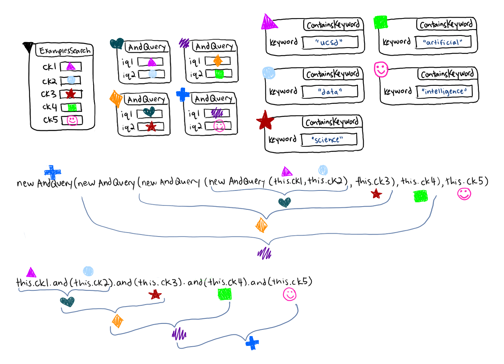

13.1 — Combining Queries, Part II
(Review the examples from module 8 before proceeding with this module. Make sure that you understand interfaces.)
In a previous lesson, we saw how we could combine search queries together using combiner-classes like AndQuery and OrQuery. This allowed us to write queries like all3:
class ExamplesSearch {
ImageData i1 = new ImageData("ucsd cse computer science", "png", 600, 400);
ImageData i2 = new ImageData("data science ai artificial intelligence", "png", 500, 400);
ImageQuery lg1 = new LargerThan(600, 400);
ImageQuery me1 = new MatchesExtension("png");
ImageQuery ck1 = new ContainsKeyword("ucsd");
ImageQuery all3 = new AndQuery(new AndQuery(this.lg1, this.me1), this.ck1);
}One thing that gets a bit verbose here is the construction of the combiners. If we make large queries, we end up repeating new AndQuery quite a few times, which is a lot of typing:
class ExamplesSearch {
ImageQuery ck1 = new ContainsKeyword("ucsd");
ImageQuery ck2 = new ContainsKeyword("data");
ImageQuery ck3 = new ContainsKeyword("science");
ImageQuery ck4 = new ContainsKeyword("artificial");
ImageQuery ck5 = new ContainsKeyword("intelligence");
ImageQuery all5 = new AndQuery(new AndQuery(new AndQuery(new AndQuery(this.ck1, this.ck2), this.ck3), this.ck4), this.ck5);
}
While this isn’t unusable, it’s often nice to find ways to shorten code like this. One idea is to have a method called and() for the various ImageQuery classes. It would take another ImageQuery and produce a new AndQuery of the two. In that case, for example, we could shorten new AndQuery(this.ck1, this.ck2) to this.ck1.and(this.ck2) , which would return an equivalent result.
To implement and(), we’d write, in ContainsKeyword:
class ContainsKeyword implements ImageQuery {
...
public AndQuery and(ImageQuery other) {
return new AndQuery(this, other);
}
}
Do Now! Based on the code above, fill in the references that the field values for usingNew and usingAndMethod contain according to the output. usingNew.iq1 has been filled in as an example.
class ExamplesSearch {
ImageQuery ck1 = new ContainsKeyword("ucsd");
ImageQuery ck2 = new ContainsKeyword("data");
ImageQuery ck3 = new ContainsKeyword("science");
ImageQuery ck4 = new ContainsKeyword("artificial");
ImageQuery ck5 = new ContainsKeyword("intelligence");
ImageQuery all5 = new AndQuery(new AndQuery(new AndQuery(new AndQuery(this.ck1, this.ck2), this.ck3), this.ck4), this.ck5);
}
class ContainsKeyword implements ImageQuery {
...
public AndQuery and(ImageQuery other) {
return new AndQuery(this, other);
}
}Eventually, we want to modify this and() method so that we can use it to shorten new AndQuery(new AndQuery(new AndQuery(new AndQuery(this.ck1, this.ck2), this.ck3), this.ck4), this.ck5) to this.ck1.and(this.ck2).and(this.ck3).and(this.ck4).and(this.ck5). The memory diagram to demonstrate the equivalence of these two expressions is shown below.

Of course, we have more types of queries than just ContainsKeyword, so it isn't sufficient to just implement the and() method in one place. We need to add it to all the classes that we want to use and() on, and we'll also generalize the return type to ImageQuery.
class MatchesExtension implements ImageQuery {
...
public ImageQuery and(ImageQuery other) {
return new AndQuery(this, other);
}
}
class LargerThan implements ImageQuery {
...
public ImageQuery and(ImageQuery other) {
return new AndQuery(this, other);
}
}
class AndQuery implements ImageQuery {
...
public ImageQuery and(ImageQuery other) {
return new AndQuery(this, other);
}
}We could try to run an example like this:
class ExamplesSearch {
ImageQuery lg1 = new LargerThan(600, 400);
ImageQuery me1 = new MatchesExtension("png");
ImageQuery ck1 = new ContainsKeyword("ucsd");
ImageQuery ck2 = new ContainsKeyword("data");
ImageQuery all5 = this.lg1.and(this.me1).and(this.ck1).and(this.ck2);
}However, this still isn’t quite enough to make it run. Try it, and look at the error message:
Do Now! Use the code above to answer the following questions.
Since all the names in the example in the previous step have type ImageQuery—the interface type—Java won’t let us use the and() method on them. We have to first declare that method as part of the interface:
interface ImageQuery {
boolean matches(ImageData id);
ImageQuery and(ImageQuery other);
}Now the example above will run, and we can use this idea of the and() method to shrink our code. Notice that the shortened version of the example from the first step also runs here.
However, to shorten that line, we paid a particular cost – we had to put the same and() method in each of the ImageQuery-implementing classes. This is a bunch of repeated work. It might be worth it if we have hundreds of lines of code that make use of this, but it’s still annoying to repeat code when it is exactly the same across classes.
Summary
- Combinations of many queries can take up a lot of space. To try to shorten our code, we came up with a method called
and()that would return a newAndQueryof itself and its argument. - To make this
and()method work with different types of queries, we had to add it to theQueryinterface and write the exact same code for the method in each class that implementsQuery. This is less than ideal.